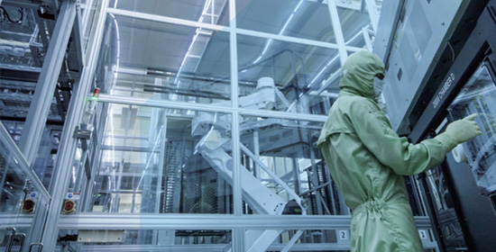
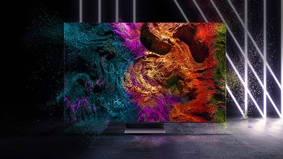
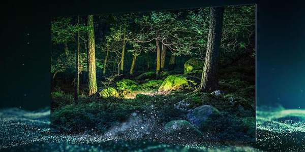

기업소개
끊임없는 기술혁신을 통해 글로벌 디스플레이 시장을 선도하겠습니다.
-
기업명
삼성디스플레이
-
설립일
2012년 4월 1일
-
본사소재
경기도 용인시 기흥구
-
대표이사
최주선
-
삼성디스플레이는 끊임없는 기술혁신을 통해 현재와 미래를 연결하는 디스플레이를 만드는 회사입니다.
-

삼성디스플레이는 2012년 OLED와 LCD의 합병으로 사업의 시너지를 극대화했으며, 독보적인 기술을 바탕으로 스마트폰, 노트북, 모니터, TV 등에 프리미엄 디스플레이 제품을 공급하고 있습니다.
-

세계 최초로 플렉서블 OLED와 폴더블 디스플레이를 양산하는 등 상상 속에만 존재하던 디스플레이를 현실로 만들어 가고 있습니다. 그리고 대형 디스플레이 시장의 판도를 뒤집을 QD 디스플레이라는 새로운 도전을 시작하고 있습니다.
-

삼성디스플레이는 자연을 그대로 담아내는 뛰어난 화질, 더욱 가볍고 얇은 디스플레이를 만드는 기술로 고객이 필요로 하는 토털 솔루션을 제공하고 있습니다. 다양한 디자인 혁신과, 120Hz 고주사율, 그리고 저전력 구동으로 5G 시대에 가장 알맞은 디스플레이, 고객의 건강까지 고려하는 블루라이트 저감 기술 등 압도적인 초격차 기술 개발로 고객에게 새로운 가치를 제공합니다.
-
글로벌 1위로서 시장을 이끌어 온 삼성디스플레이는 앞선 기술과 제품, 그리고 고객의 신뢰를 바탕으로 앞으로도 디스플레이 리더로서의 역할을 다할 것입니다.